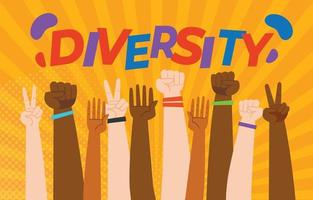

ㅤ
Signe et un symbole
Signe
Cette image est un signe de la diversité culturelle au Canada parce que ce sont des personnes racialement différentes qui se rassemblent et montrent un symbole de bonheur, et au Canada, nous avons de nombreuses ethnies différentes et nous avons des droits égaux.
Symbole
Puisque le christianisme est la religion la plus populaire au Canada, j'ai choisi le symbole de la coupe de communion. Quatre tasses sont généralement consommées lors d'une Pâque. La première est la Coupe de la Sanctification (“Je te ferai sortir”). La seconde est la Coupe de la Délivrance (“Je te libérerai”). Après avoir mangé, Jésus et ses disciples boivent une troisième fois à la Coupe de la Rédemption (“Je vous bénirai”). C'est la coupe que nous honorons aujourd'hui en communiant. La quatrième est la Coupe de la Restauration (“Je te protégerai”). Jésus ne boit pas de cette coupe et dit à ses disciples qu'il n'en boira pas jusqu'à ce qu'il la boive dans le royaume de son père. Il existe également une cinquième coupe, la coupe de la colère. Jésus est le seul à pouvoir boire dans cette coupe. Quand il est sur la croix et dit “J'ai soif, donne-moi la cinquième coupe pour que je puisse la boire en entier”.